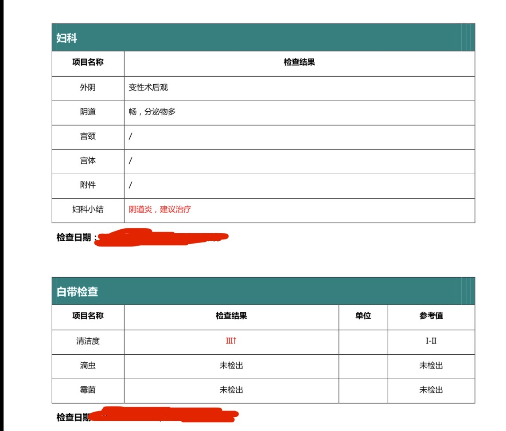

北雁冬翼（simone luxem）🏳️⚧️🏳️🌈🔬
@Simone_Luxem
@Beiyan_Yunyi “蜈蚣状疤痕”指的是什么样的….？

北雁云依 - 21018365482@o3o.ca
@Beiyan_Yunyi
变性术后观，嗝儿。
此外，忘记补充的一点：对于我，蜈蚣状疤痕是存在的，所以也许术后效果也不至于给到 8.5，只是我不太有“在纳入式性生活中不出柜”的需求
——但同院乃至同期也有术后纳入体验比较丰富者（乃至性工作者），所以很难说们顺直男的生理知识如何…… https://t.co/zPN8doV5Yr https://t.co/6RrDl8wW06